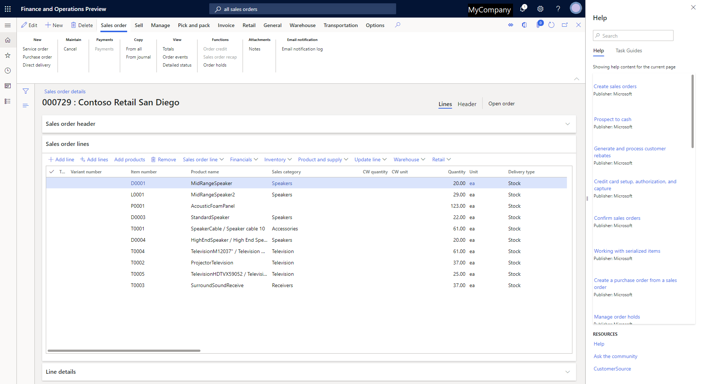
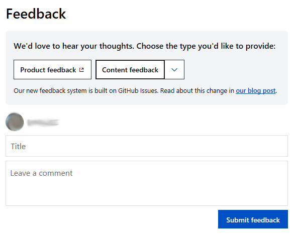
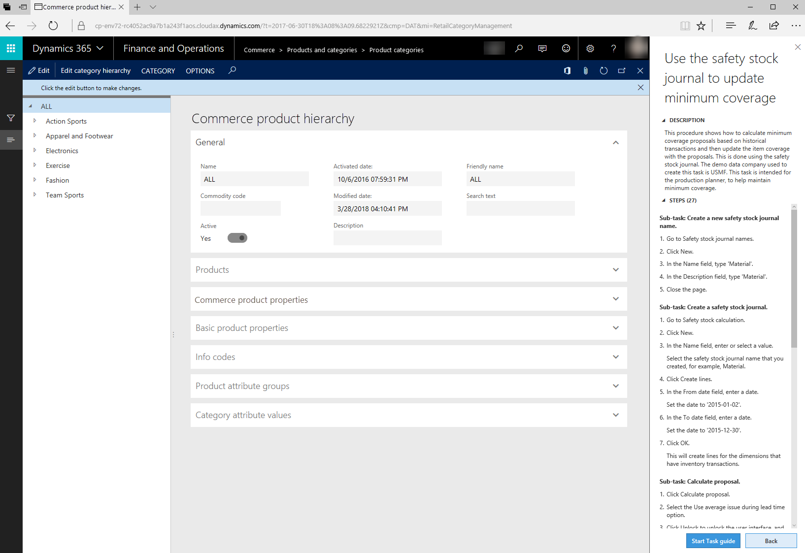
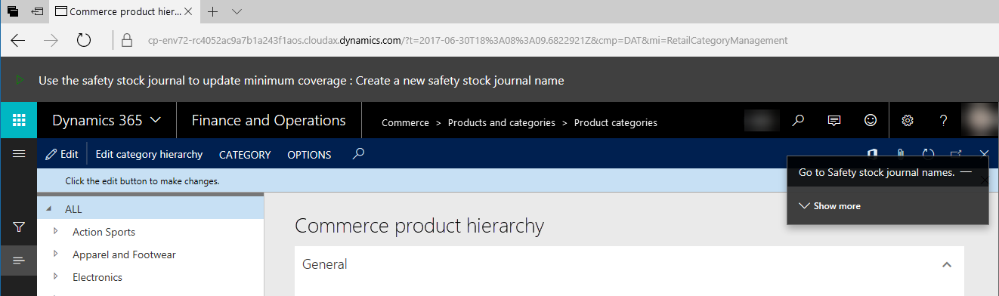

Hilfesystem
Important
Dynamics 365 for Finance and Operations hat sich zu speziell entwickelten Anwendungen entwickelt, mit denen Sie bestimmte Geschäftsfunktionen verwalten können. Weitere Informationen zu diesen Änderungen finden Sie im Dynamics 365-Lizenzierungshandbuch.
Benutzer der folgenden Apps können auf kontextsensitive Hilfe und andere Inhalte zugreifen, die auf demselben Hilfesystem basieren:
- Microsoft Dynamics 365 Commerce
- Dynamics 365 Finance
- Dynamics 365 Human Resources
- Dynamics 365 Supply Chain Management
In all diesen Apps können Sie die produktspezifische Hilfe über den Bereich Hilfe aufrufen.

Hilfe auf docs.microsoft.com
Die Website docs.microsoft.com (docs.microsoft.com/dynamics365/) ist die Standardquelle für die Produktdokumentation der oben aufgeführten Apps. Diese Seite enthält die folgenden Funktionen:
- Zugriff auf aktuellsten Inhalt– Die Site bietet Microsoft eine schnellere und flexiblere Methode, Produktdokumentationen zu erstellen, zu liefern und zu aktualisieren. Daher erhalten Sie einfachen Zugriff auf die neuesten technischen Informationen.
- Inhalte, die von den Experten geschrieben wurden – Der Inhalt der Site ist für Beiträge von Community-Mitgliedern innerhalb und außerhalb von Microsoft verfügbar.
Sie können Inhalte auf docs.microsoft.com mit jeder Suchmaschine finden. Für optimale Ergebnisse empfiehlt sich die Verwendung einer Websitesuche, z. B. Website: docs.microsoft.com dynamics 365 "Suchbegriff".
Benachrichtigungen zu Änderungen über einen RSS-Feed erhalten
Verwenden Sie den folgenden Link, um einen RSS-Feed (Really Simple Syndication) aller Updates zu abonnieren, die den Inhalt von docs.microsoft.com betreffen:
Feedback senden
Wenn Sie zu Fragen oder Feedback zu einem Thema haben, lassen Sie uns stattdessen einen Kommentar am unteren Seitenrand.
Wählen Sie Feedback aus, um zu den Kommentaren unten auf der Seite zu gelangen. Wählen Sie dann Produktfeedback oder Anmelden, um Dokumentationsfeedback zu senden aus.
Geben Sie zunächst Ihre Kommentare ein, und wählen Sie dann Feedback senden aus.

Note
Wenn Sie Feedback zur Dokumentation senden möchten, müssen Sie sich mit einem GitHub-Konto anmelden. Weitere Informationen finden Sie unter Ihr GitHub-Profil einrichten und verwalten.
Tragen Sie zur Dokumentation bei
Sie können zur Dokumentation beitragen und Änderungen daran vornehmen. Wählen Sie zu Beginn die Schaltfläche Bearbeiten (Stiftsymbol) in einem Thema aus. Das folgende Video zeigt, wie Sie zu unserer Dokumentation beitragen können.
Das Video So tragen Sie zur Microsoft Dynamics 365-Dokumentation bei (oben) ist im Microsoft Dynamics 365-Kanal auf YouTube enthalten.
Weitere Informationen finden Sie in der Leitfaden für Mitwirkende an der Microsoft-Dokumentation, das von dem Team veröffentlicht wird, das die Website docs.microsoft.com erstellt hat.
Note
Es werden derzeit nur Beiträge für unseren englischen Inhalt akzeptiert.
Aufgabenleitfäden
Ein Aufgabenleitfaden ist eine kontrollierte, geführte, interaktive Erfahrung, die Sie durch die Schritte einer Aufgabe oder eines Geschäftsprozesses führt. Sie können einen Aufgabenleitfaden aus dem Hilfe-Bereich öffnen (wiedergeben). Wenn Sie zuerst einen Aufgabenleitfaden auswählen, werden im Bereich Hilfe schrittweise Anleitungen für die Aufgabe angezeigt. Lokalisierte Aufgabenleitfäden sind verfügbar.
Microsoft hat Aufgabenleitfadenbibliotheken für Produktversionen bis zur Veröffentlichung der Dynamics 365 for Finance and Operations-Version von Dezember 2017 freigegeben. Im Abschnitt Zugreifen auf Aufgabenleitfäden über den Hilfebereich dieses Themas wird beschrieben, wie Sie die richtigen Aufgabenleitfäden für Ihr Produkt finden.

Wählen Sie Aufgabenleitfaden starten unten im Bereich Hilfe aus, um die geführte, interaktive Umgebung zu starten. Ein schwarzer Mauszeiger zeigt Ihnen, wohin Sie zuerst gehen müssen. Folgen Sie den Anweisungen, die in der Benutzeroberfläche angezeigt werden, und geben Sie Daten ein, wie vorgesehen.

Important
Die Daten, die Sie eingeben, wenn Sie einen Aufgabenleitfaden wiedergeben, sind real. In einer Produktionsumgebung werden die Daten in das Unternehmen eingegeben, das Sie derzeit verwenden.
Sie können Aufgabenaufzeichnung verwenden, um Ihre eigenen benutzerdefinierten Aufgabenleitfäden zu erstellen. Weitere Informationen finden Sie unter Dokumentation oder Training mit Aufgabenrecorder erstellen.
Produkthilfe
Einige Felder verfügen über Feldbeschreibungen, damit Benutzer entsperrt werden können, wenn sie beispielsweise nicht sicher sind, welche Daten das Feld enthält. Zusätzlich bietet der Bereich Hilfe des Produkts kontextsensitiven Zugriff auf Inhalte, die Benutzern den Einstieg, die Aufhebung von Sperren und das Abrufen weiterer Informationen erleichtern.
Wählen Sie die Schaltfläche Hilfe (?) und dann Hilfe aus, um auf den Hilfeinhalt zuzugreifen. Drücken Sie alternativ die Tastenkombination STRG+UMSCHALT+? In beiden Fällen wird der Bereich Hilfe angezeigt. Über den Bereich Hilfe können Sie auf grundlegende Themen oder Aufgabenleitfäden zugreifen, die für den Bereich des Produkts relevant sind, in dem Sie sich gerade befinden.
Auf Hilfethemen über den Hilfebereich zugreifen
Über den Bereich Hilfe können Sie auf Themen zugreifen, die für den Client gelten. Wenn Sie zuerst den Bereich Hilfe öffnen, zeigt die Registerkarte Hilfe die Themen an, die für die Seite gelten, auf der Sie sich aktuell befinden. Wenn keine Themen gefunden werden, können Sie Schlüsselwörter eingeben, um die Suche genauer zu definieren. Wenn Sie ein Thema im Bereich Hilfe auswählen, wird es auf einer neuen Registerkarte in Ihrem Browser geöffnet.
Important
Dieser Abschnitt gilt nicht für Dynamics 365 Human Resources. Das Hilfesystem für Human Resources wird automatisch mit den Aufgabenleitfäden für das Produkt verbunden. Sie können außerdem keine benutzerdefinierten Aufgabenleitfäden für Human Resources erstellen.
Auf Aufgabenleitfäden über den Hilfebereich zugreifen
Bevor Sie auf Aufgabenleitfäden aus dem Bereich Hilfe zugreifen können, muss ein Systemadministrator einige Einstellungen auf der Seite Systemparameter in Finance, Supply Chain Management oder Commerce konfigurieren. Weitere Informationen finden Sie unter Hinzufügen von Aufgabenleitfäden.
Nachdem ein Systemadministrator diese Schritte eingerichtet hat, können Sie den Bereich Hilfe öffnen und die Registerkarte Aufgabenleitfäden auswählen. Dort werden nun die Aufgabenleitfäden angezeigt, die für die Seite gelten, auf der Sie sich aktuell befinden. Wenn keine Aufgabenhandbücher gefunden werden, können Sie Schlüsselwörter eingeben, um die Suche genauer zu definieren. Nachdem Sie einen Aufgabenleitfaden im Bereich Hilfe ausgewählt haben, werden im Bereich Hilfe die schrittweisen Anleitungen angezeigt, und Sie können den Aufgabenleitfaden wiedergeben.
Wo sind die übersetzten Aufgabenleitfäden für Microsoft-Bibliotheken?
Übersetzte Aufgabenleitfäden werden in den Bibliotheken freigegeben, deren Titel die Angabe „Alle Sprachen“ enthalten. Stellen Sie sicher, dass Sie mit der entsprechenden Bibliothek verbunden sind, um die Hilfe zu lokalisierten Aufgabenleitfäden anzuzeigen. Jeder Benutzer kann die Sprache, in der ein Aufgabenleitfaden angezeigt wird, durch Auswahl der entsprechenden Spracheinstellung unter Optionen > Einstellungen ändern.
- Wenn ein Aufgabenleitfaden übersetzt wurde, wird beim Öffnen der gesamte Text des Leitfadens in der ausgewählten Sprache angezeigt.
- Wenn ein Aufgabenleitfaden noch nicht übersetzt wurde, wird beim Öffnen nur der Text der Steuerelemente in der ausgewählten Sprache angezeigt.
Erstellen einer benutzerdefinierten Hilfe
Sie können Hilfe für Benutzer erstellen, indem Sie benutzerdefinierte Aufgabenleitfäden erstellen oder Ihre eigene Website mit dem Bereich Hilfe verbinden. Weitere Informationen finden Sie in folgenden Themen:
- Aufgaberecorder-Ressourcen (This is an external link)
- Übersicht über benutzerdefinierte Hilfe (This is an external link)
Zusätzliche Ressourcen
In der folgenden Tabelle werden unsere Websites aufgeführt. Für Sites, die ein Sternchen (*) neben dem Namen besitzen,ist es erforderlich, dass Sie sich über ein Konto anmelden, das einem Dienstleistungsplan zugeordnet ist.
| Site | Beschreibung |
|---|---|
| Docs.microsoft.com (This is an external link) | Diese Website hostet alle Produktdokumentationen für Dynamics 365 bzw. stellt eine Verbindung zu ihnen her. |
| Microsoft Learn | Diese Website ist die kostenlose Microsoft eLearning-Website. |
| Microsoft Dynamics Lifecycle Services (LCS)* | Diese Website bietet einen cloudbasierten Kooperationsbereich, den Debitoren und Partner verwenden können, um Projekte vom Vorverkauf über die Implementierung bis hin zum Betrieb zu verwalten. Sie ist in allen Phasen einer Implementierung hilfreich. |
| Support-Blog | Diese Website bietet Tipps und Tricks, die vom Support-Team bereitgestellt werden. |
| Docs.microsoft.com/previous Versionen (This is an external link) | Diese Website hostet Inhalte aus früheren Versionen. |
| Dynamics-Community | Diese Website hostet Blogs, Foren und Videos. |
| Microsoft.com/dynamics365 | Diese Website stellt Auswertungen und Verkaufsinformationen bereit. |
| CustomerSource* | Diese Website hostet Trainingsressourcen für Berichte zum Herunterladen und für Whitepapers und ist die primäre Supportwebsite für Inhaber von Dienstleistungsplänen. Für den Zugriff auf einige Ressourcen dieser Website ist möglicherweise ein Dienstleistungsplan erforderlich. |